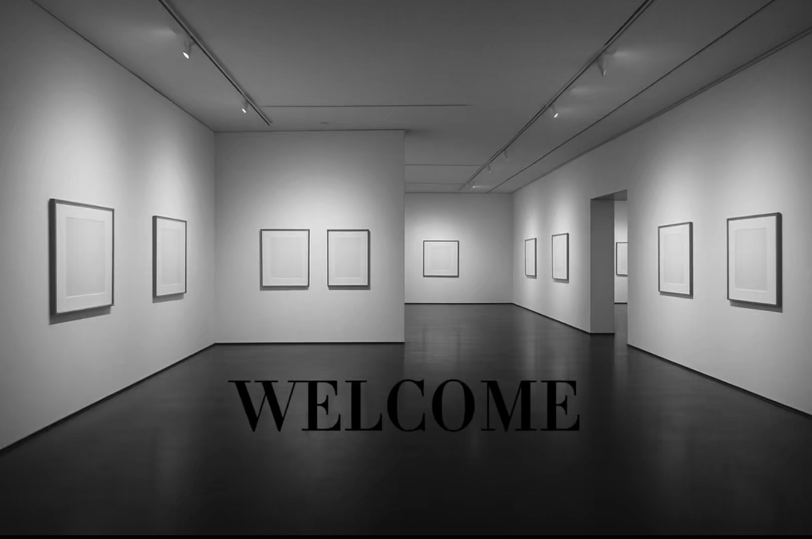

DEDAL DES COULEURS
DEDAL DES COULEURS
À PROPOS DE NOUS
Créée en 2010, Dedal des Couleurs est une galerie d’art contemporain qui met en lumière aussi bien de jeunes
talents que des artistes confirmés.
Son objectif est d’offrir un lieu de rencontre privilégié entre l’art
et le public, dans une ambiance à la fois raffinée et accueillante.
Tout au long de l’année, la galerie
propose des expositions, des évènements exclusifs et des échanges avec les artistes, permettant à chacun de
vivre une expérience culturelle riche et inspirante.
